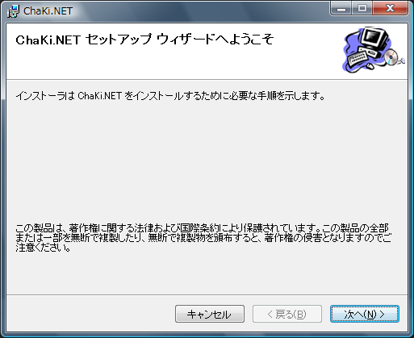
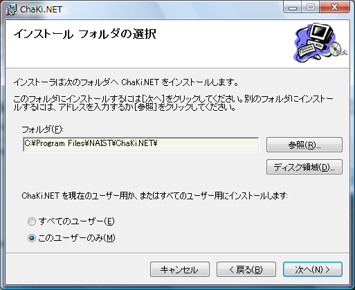
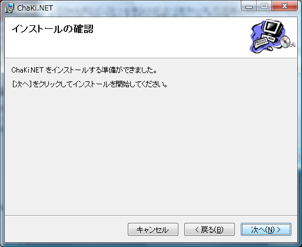
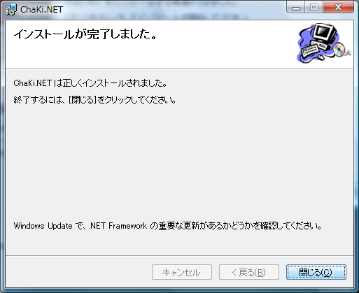
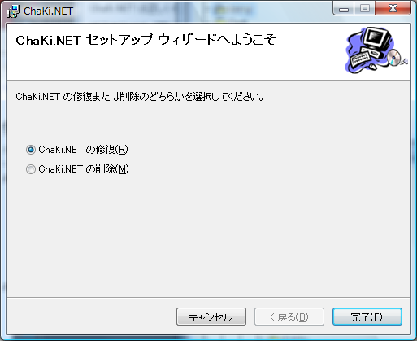

ChaKi.NET lite本体のインストール
リリースページより ChaKiNetLiteSetup64.msi ファイルをダウンロードし、ダブルクリックにより本体のインストールを開始します。

この画面で、「次へ」を選択します。

「次へ」を選択します。

「次へ」を選択します。

以上でインストールは完了です。
次のような画面が出た場合は、既に同じバージョンのChaKi.NET liteがインストールされていますので、
ChaKiNetLiteSetup64.msiファイルが最新のものであることを確認し、画面を閉じるか、または「修復」を選択して
再インストールを行います。

「既に同じアプリケーションがインストールされています」というメッセージが出た場合は、
コントロールパネルの「アプリの追加と削除」からChaKi.NET liteをアンインストールし、
再インストールを行ってください。